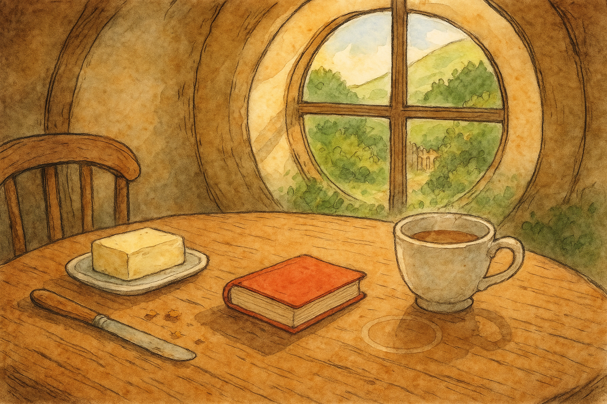

I noticed, this morning, a little round mark on the table where my teacup had been. It is nothing grand — not a rune, not a map — only a warm ring, pale as a ghost of steam.
Still, in Middle Earth, I have learned that small circles can mean a great deal. There are rings one ought to be cautious of, of course; but there are also rings like this one, harmless as a biscuit, quietly telling you: you sat here; you rested; you began.
I dabbed it away with the corner of a cloth (with as much dignity as a hobbit can manage before breakfast), and I remembered something true of most journeys: you do not start with banners and trumpets. You start with a kettle, a chair pulled close, and the notion that perhaps — just for today — you will be a little more ready for whatever knock comes at the round green door.
Filed under: Middle Earth • Written at Bag End